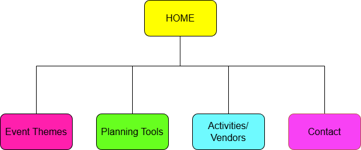
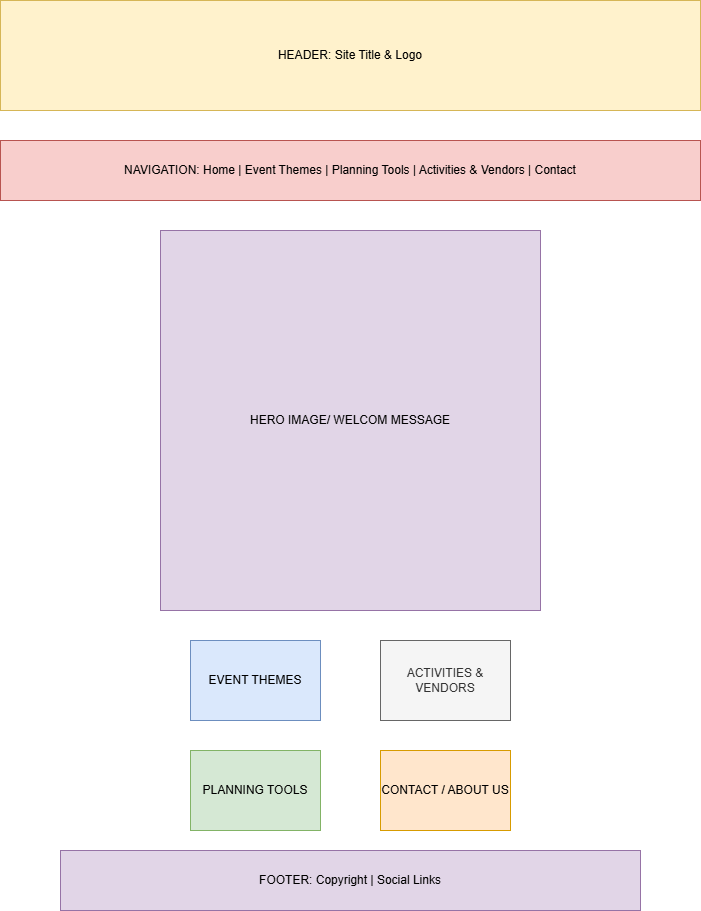

1. Project Concept
Website Overview
The website I will design is a Children's Event Planner that helps parents and caregivers plan fun and organized events for kids, such as birthday parties, holiday gatherings, school celebrations, and other child-focused activities. The site will provide ideas, tools, and inspiration so that planning feels less stressful and more enjoyable.
Audience and Goals
Intended Audience
The intended audience includes parents, guardians, teachers, daycare staff, and family members who are responsible for organizing events for children. The tone of the website will be friendly, encouraging, and easy to understand so that users with different levels of technical comfort can still benefit.
Objectives
The main objectives of the website are to:
Overall, this project combines my interests in event planning and web design into a resource that can genuinely help busy families.
2. Site Map
The Children’s Event Planner website will use a simple and clear structure so that visitors can quickly find information. The Home page serves as the starting point and connects to four main pages:
The custom site map image below shows how the pages connect to one another. The Home page is at the top, and each of the four main sections branches off from it. This organization keeps the navigation straightforward and makes it easy for users to move between planning ideas, tools, and ways to get help.

3. Wireframe
The homepage of the Children’s Event Planner website will include a simple header with the site title and navigation links, a welcoming hero area, and quick access to the four main sections. Below the hero area, a set of feature boxes will briefly highlight Event Themes, Planning Tools, Activities & Vendors, and Contact so users can jump directly to what they need.
The wireframe image below is a rough layout sketch rather than a final design. It shows where the header, navigation bar, main content, and footer will go on the homepage.

I created this wireframe using diagrams.net so I could plan the structure of the page before building it with HTML.
4. Project Resources
To complete my final website project successfully, I will rely on several resources. These include tutorials on HTML and CSS, event-planning blogs, and design inspiration from kid-focused websites.
Key Resources
Required HTML Tag Checklist
The list below shows how I meet the HTML tag requirements in this proposal page: